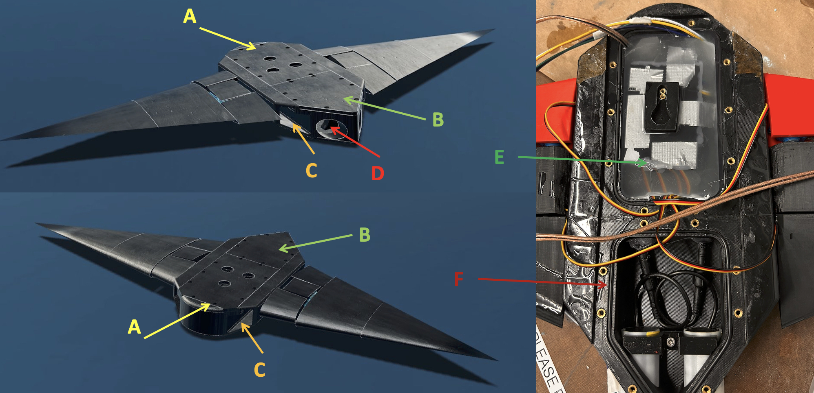

Manta Ray Robot
C/C++
Python
Mechatronics
3D Printing
OnShape
This was our project for our Bioinspired Robot Design and Experimentation. We created a manta ray inspired robot to see if we could achieve more energy efficient mobility with a flapping propulsion mode as opposed to a traditional propeller propulsion mode. As predicted we were unable to match the efficiency of a propeller with a rigid flapping wing but we did make a cool ass robot so that was a W.
Mechanical & Structural Design
- Hull Architecture: Modular two-segment 3D-printed PETG hull featuring smooth fillets, covered fasteners, and flow-through ducts designed to minimize front-facing profile drag.
- Waterproofing Strategy: Multi-layered seal using custom O-ring gaskets, outer epoxy surface coatings, and internal silicone rubber encapsulation for sensitive electronics.
- 2-DOF Actuated Wings: Dual-axis (heave and pitch) symmetrical NACA 0016 wings driven by high-torque IP67-rated D646WP servos, enabling inverse kinematics control for figure-eight wingtip trajectories.
Mechatronics & Electronics
- Control Core: Dual ESP32 architecture using ESP-NOW low-latency communication between the floating surface node and host PC.
- Sensor Suite: Adafruit BNO055 IMU providing onboard sensor fusion for tri-axial spatial orientation, alongside an INA219 current/voltage monitor sampling at 10 Hz.
- Data Pipeline: Python telemetry dashboard reading serial streams to plot real-time energetic dynamics and auto-log raw data for post-hoc kinematic analysis.
- Github repo for control system and data pipeline